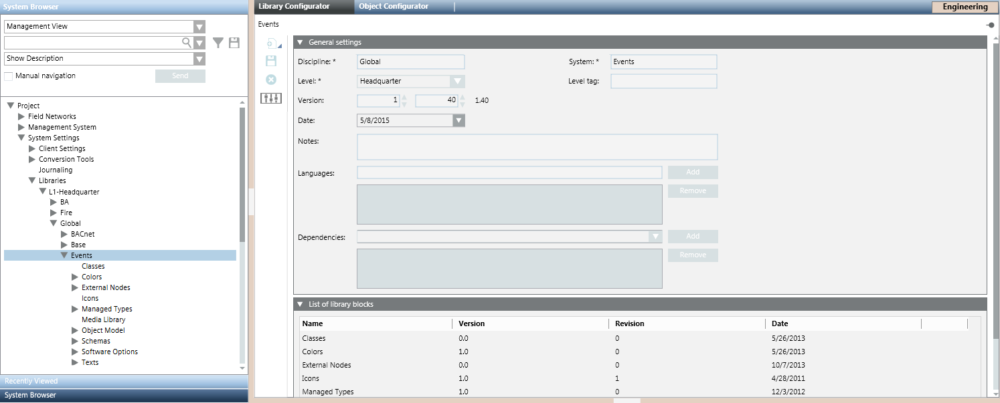
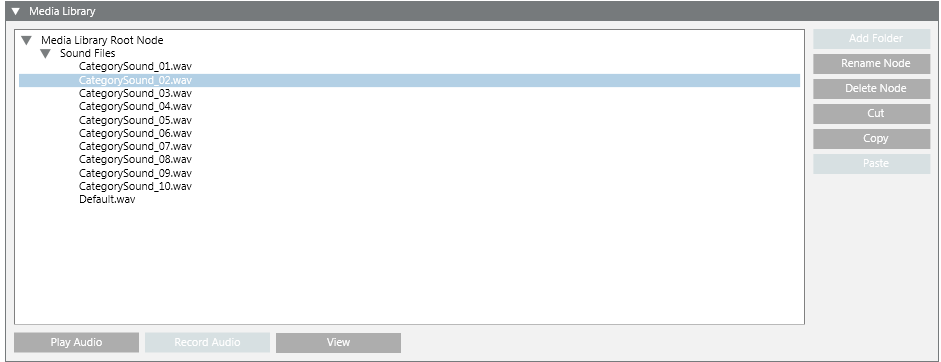
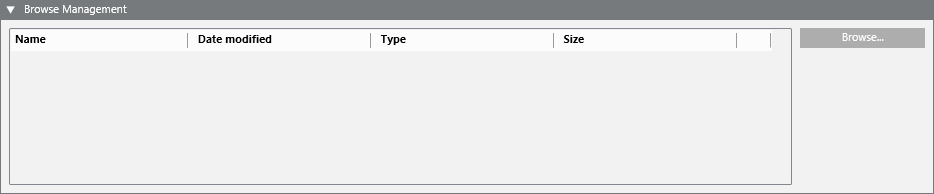

Media Library
Media Library is the library block that collects together all the media files used by a system library. The supported file types are MP3, WMA, WAV, PPT, and TXT. Typically, a Media Library block is used in an Events library to store audio files associated to specific alarm types.

In Engineering mode, when you select the Media Library block of a system library, the Media Library tab displays expanders where you can manage existing media files as well as upload additional ones. For instructions, see Configuring Sounds and Media in a Library.

The Media Library under L1-Headquarter > Global > Events is basic configuration provided by Headquarter and can be modified by Headquarter experts and Customer Support only.
Depending on their allowed customization level, authorized experts can manage media files at L2-Region, L3-Country, or L4-Project level.
Media Library Expander
The Media Library expander displays the imported media files that you can organize as needed. Media files can be organized into subfolders under the Media Library Root Node, using the buttons provided.

Button | Description |
Add Folder | Adds folder to help to customize and better organize the media files. |
Rename Node | Display the Rename Node dialog box to rename the media file selected in the media library tree view. |
Delete Node | Removes the selected media file from the media library. |
Cut | Remove a media file from a location and place it in a buffer. |
Copy | Copy a media file to the clipboard. |
Paste | Paste a media file (from buffer or clipboard) to another location. |
View | Plays (or displays) the selected media file in its player (WAV) (or viewer, such as TXT or PPT). |
Record Audio | Records a new audio file. |
Play Audio | Plays the selected audio file. |
Browse Management Expander
The Browse Management expander allows you to browse the local file system for media files to upload to the Media Library.

Each media file is identified by:
- Name
- Last time the media file was modified
- Type (MP3, WMA, WAV, PPT, and TXT) and size (in bytes)
You can click Browse to select the folder containing the media files you want to upload.
Uploaded media files are stored at the following path:
[Installation Drive]:\[Installation Folder]\[Project Name]\libraries\[library folder]\[library]\MediaLibrary.